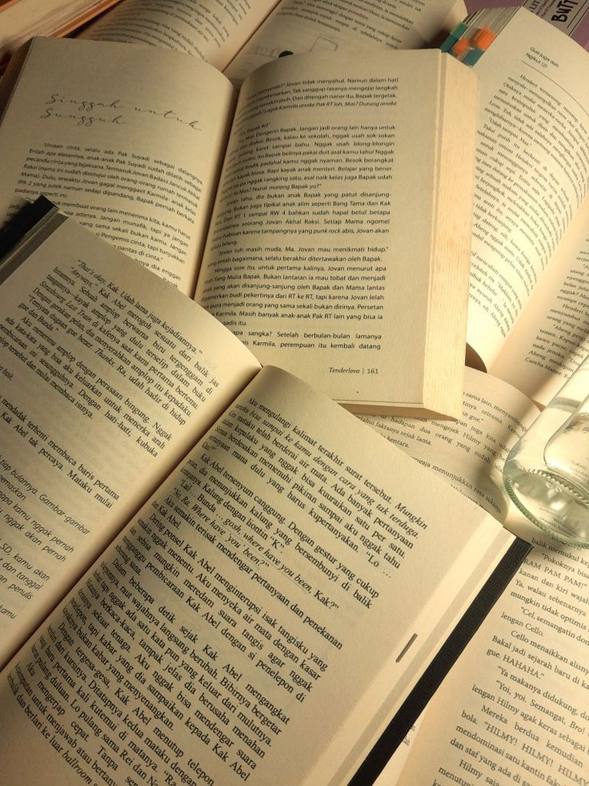
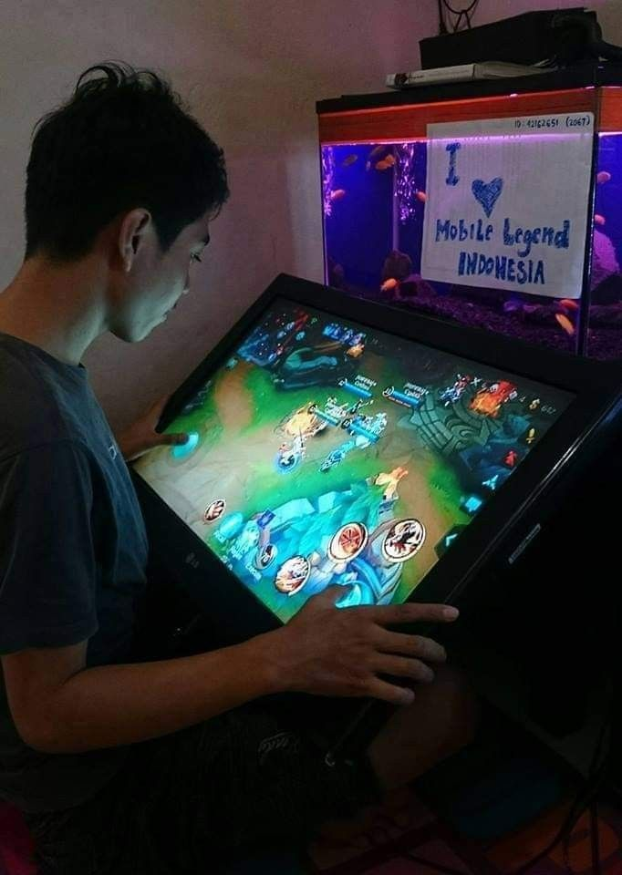

Kegiatan Andini Putri Malaya
 |
Kegiatan Sehari-hari Laya bermain game di waktu luang sebagai salah satu cara untuk menghibur diri dan melepas rasa lelah setelah menjalani berbagai aktivitas. Saya senang bermain game karena dapat memberikan hiburan, melatih konsentrasi, meningkatkan kemampuan berpikir dan strategi, serta membuat waktu luang menjadi lebih menyenangkan. Selain itu, bermain game juga dapat menjadi sarana untuk berinteraksi dan bersenang-senang bersama teman |
 |
Kegiatan Sehari-hari Laya Kegiatan sehari-hari saya adalah Bermain Game baik di waktu luang maupun saat sedang ingin mencari informasi baru. Membaca menjadi salah satu kegiatan yang saya sukai karena dapat menambah wawasan dan pengetahuan. Selain itu, dengan membaca saya juga dapat memperoleh banyak informasi, menemukan berbagai hal baru, melatih konsentrasi, serta mendapatkan inspirasi. Bagi saya, membaca bukan hanya untuk mengisi waktu luang, tetapi juga menjadi cara untuk terus belajar dan mengembangkan diri. |
| Kembali ke halaman utama | |